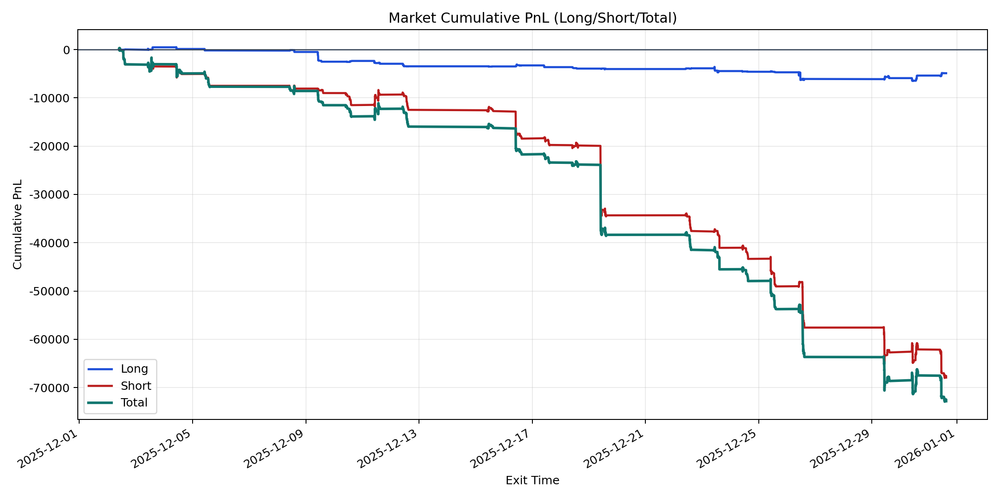
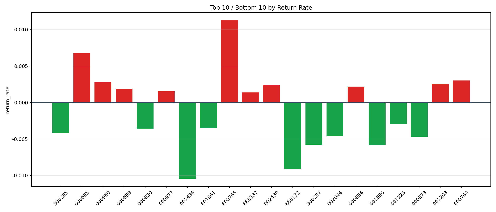

| repo_root | /home/haoranyou/data/output/alpha0.4_1w_5s_3ticks_index_filter/index_weights_500 |
|---|---|
| period_months | 1 |
| period_label | 2025-12-02_to_2025-12-31 |
| start_time | 2025-12-02 09:50:12 |
| end_time | 2025-12-31 15:00:00 |
| n_trades | 5247 |
| n_symbols | 80 |
| total_pnl | -72827.55724999997 |
| long_total_pnl | -4897.771499999989 |
| short_total_pnl | -67929.78574999998 |
| total_entry_notional | 49324427.0 |
| long_entry_notional | 6139703.0 |
| short_entry_notional | 43184724.0 |
| total_return_rate | -0.0014765008268621137 |
| long_return_rate | -0.0007977212415649403 |
| short_return_rate | -0.0015730049762503978 |
| top_symbols_by_return | ["600765", "600685", "600764", "000960", "002203", "002430", "600884", "600699", "600977", "688387"] |
| bottom_symbols_by_return | ["002436", "688172", "601696", "300207", "000878", "002044", "300285", "000830", "601061", "603225"] |

